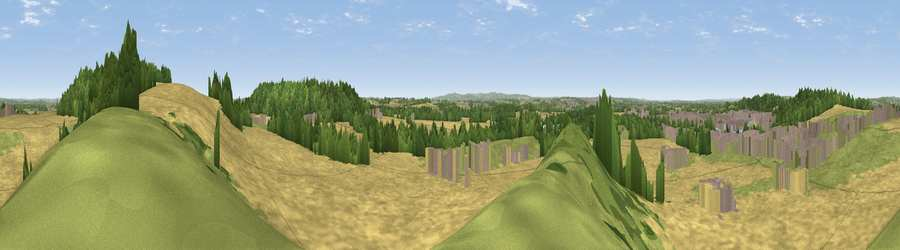

Viewpoint near Thrumpton
#29667 in England · top 53% of its area beats it · near ThrumptonThe view, rendered

A 360° render of this exact spot computed from the terrain model, tree cover and land cover — summer colours, afternoon light, calibrated against photographs of famous viewpoints. Real trees, hedges and buildings will differ in detail.
The panorama
Grey silhouette: terrain skyline in each direction (720 bearings, Earth curvature and refraction included). Dashed green: skyline with trees (+15 m) and buildings (+8 m) as obstacles. Blue strip: how far the ground is visible on each bearing.
Where the view opens
Wedge length = distance to the farthest visible ground on that bearing (vegetation-aware). Rings at 10, 25 and 50 km.
What fills the view
62% cropland · 18% grassland · 12% woodland · 7% built-up ·
Angular shares of the visible panorama (visual magnitude), not map area. Landscape diversity 0.48 (0–1 Shannon).
Key numbers
More beautiful places nearby
The staircase of upgrades: each row has a higher view potential than everything closer. Driving times are estimates from straight-line distance, calibrated against real road routing — check an actual route before setting out.
| Place | Direction | Drive | Score |
|---|---|---|---|
| Viewpoint near Gotham | SE · 1 km | ~3 min | 49.9 |
| Viewpoint near Thrumpton | NE · 1 km | ~3 min | 58.6 |
| Viewpoint near Gotham | NE · 2 km | ~6 min | 60.1 |
| No Man's Lane | NW · 9 km | ~18 min | 65.8 |
| Ives Head | SSW · 13 km | ~24 min | 73.3 |
| Viewpoint near Woodhouse Eaves | S · 15 km | ~27 min | 77.7 |
| Viewpoint near Mow Cop | WNW · 71 km | ~94 min | 78.9 |
| Viewpoint near Mow Cop | WNW · 71 km | ~94 min | 80.2 |
52.86212, -1.23836 · source: screening · position refined by local search. Computed location — check access rights before visiting.